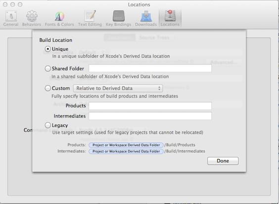

iOS Platform Guide
This guide shows how to set up your SDK development environment to deploy Cordova apps for iOS devices such as iPhone and iPad. See the following for more detailed platform-specific information:
The command-line tools above refer to versions prior to Cordova 3.0. See The Command-Line Interface for information about the current interface.
Requirements and Support
Apple® tools required to build iOS applications run only on the OS X operating system on Intel-based Macs. Xcode® 4.5 (the minimum required version) runs only on OS X version 10.7 (Lion) or greater, and includes the iOS 6 SDK (Software Development Kit). To submit apps to the Apple App Store℠ requires the latest versions of the Apple tools.
You can test many of the Cordova features using the iOS emulator installed with the iOS SDK and Xcode, but you need an actual device to fully test all of the app's device features before submitting to the App Store. The device must have at least iOS 5.x installed, the minimum iOS version supported as of Cordova 2.3. Supporting devices include all iPad® models, iPhone® 3GS and above, and iPod® Touch 3rd Generation or later. To install apps onto a device, you must also be a member of Apple's iOS Developer Program, which costs $99 per year. This guide shows how to deploy apps to the iOS emulator, for which you don't need to register with the developer program.
Install the SDK
There are two ways to download Xcode:
from the App Store, available by searching for "Xcode" in the App Store application.
from Apple Developer Downloads, which requires registration as an Apple Developer.
Once Xcode is installed, several command-line tools need to be enabled for Cordova to run. From the Xcode menu, select Preferences, then the Downloads tab. From the Components panel, press the Install button next to the Command Line Tools listing.
Open a Project in the SDK
Use the cordova utility to set up a new project, as described in The
Cordova The Command-Line Interface. For example, in a source-code directory:
$ cordova create hello com.example.hello "HelloWorld"
$ cd hello
$ cordova platform add ios
$ cordova prepare # or "cordova build"
Once created, you can open it from within Xcode. Double-click to open
the hello/platforms/ios/hello.xcodeproj file. The screen should
look like this:

Deploy to Emulator
To preview the app in the iOS emulator:
Make sure the .xcodeproj file is selected in the left panel.
Select the hello app in the panel immediately to the right.
-
Select the intended device from the toolbar's Scheme menu, such as the iPhone 6.0 Simulator as highlighted here:

-
Press the Run button that appears in the same toolbar to the left of the Scheme. That builds, deploys and runs the application in the emulator. A separate emulator application opens to display the app:

Only one emulator may run at a time, so if you want to test the app in a different emulator, you need to quit the emulator application and run a different target within Xcode.
Xcode comes bundled with emulators for the lastest versions of iPhone and iPad. Older versions may be available from the Xcode → Preferences → Downloads → Components panel.
Deploy to Device
For details about various requirements to deploy to a device, refer to the Configuring Development and Distribution Assets section of Apple's Tools Workflow Guide for iOS. Briefly, you need to do the following before deploying:
Join the Apple iOS Developer Program.
Create a Provisioning Profile within the iOS Provisioning Portal. You can use its Development Provisioning Assistant to create and install the profile and certificate Xcode requires.
Verify that the Code Signing section's Code Signing Identity within the project settings is set to your provisioning profile name.
To deploy to the device:
Use the USB cable to plug the device into your Mac.
Select the name of the project in the Xcode window's Scheme drop-down list.
Select your device from the Device drop-down list. If it is plugged in via USB but still does not appear, press the Organizer button to resolve any errors.
Press the Run button to build, deploy and run the application on your device.
Common Problems
Deprecation Warnings: When an application programming interface (API) is changed or replaced by another API, it is marked as deprecated. The API still works in the near term, but is eventually removed. Some of these deprecated interfaces are reflected in Apache Cordova, and Xcode issues warnings about them when you build and deploy an application.
Xcode's warning about the invokeString method concerns functionality
that launches an app from a custom URL. While the mechanism to load
from a custom URL has changed, this code is still present to provide
backwards functionality for apps created with older versions of
Cordova. The sample app does not use this functionality, so these
warnings can be ignored. To prevent these warnings from appearing,
remove the code that references the deprecated invokeString API:
-
Edit the Classes/MainViewController.m file, surround the following block of code with
/*and*/comments as shown below, then type Command-s to save the file:(void)webViewDidFinishLoad:(UIWebView*)theWebView { // only valid if ___PROJECTNAME__-Info.plist specifies a protocol to handle /* if (self.invokeString) { // this is passed before the deviceready event is fired, so you can access it in js when you receive deviceready NSLog(@"DEPRECATED: window.invokeString - use the window.handleOpenURL(url) function instead, which is always called when the app is launched through a custom scheme url."); NSString* jsString = [NSString stringWithFormat:@"var invokeString = \"%@\";", self.invokeString]; [theWebView stringByEvaluatingJavaScriptFromString:jsString]; } */ // Black base color for background matches the native apps theWebView.backgroundColor = [UIColor blackColor]; return [super webViewDidFinishLoad:theWebView]; } -
Edit the Classes/AppViewDelegate.m file, comment out the following line by inserting a double slash as shown below, then type Command-s to save the file:
//self.viewController.invokeString = invokeString; Press Command-b to rebuild the project and eliminate the warnings.
Missing Headers: Compilation errors relating to missing headers result from problems with the build location, and can be fixed via Xcode preferences:
Select Xcode → Preferences → Locations.
-
In the Derived Data section, press the Advanced button and select Unique as the Build Location as shown here:

This is the default setting for a new Xcode install, but it may be set differently following an upgrade from an older version of Xcode.
For further information, consult Apple's documentation:
Start Developing iOS Apps Today provides a quick overview of steps for developing iOS Apps.
Member Center home page provides links to several iOS technical resources including technical resources, the provisioning portal, distribution guides and community forums.
Session Videos from the Apple World Wide Developer Conference 2012 (WWDC2012)
The xcode-select command, which helps specify the correct version of Xcode if more than one is installed.
(Mac®, OS X®, Apple®, Xcode®, App Store℠, iPad®, iPhone®, iPod® and Finder® are Trademarks of Apple Inc.)